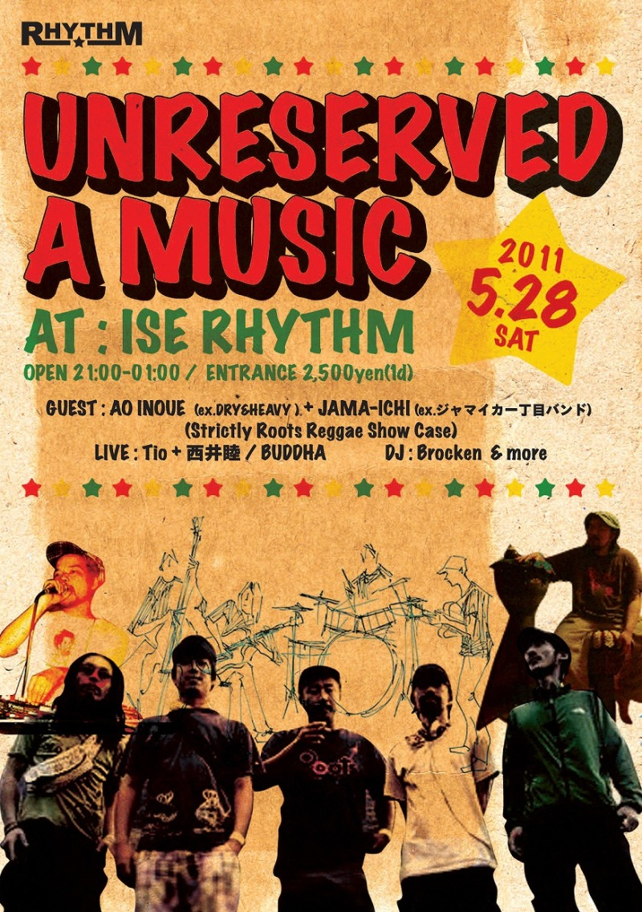
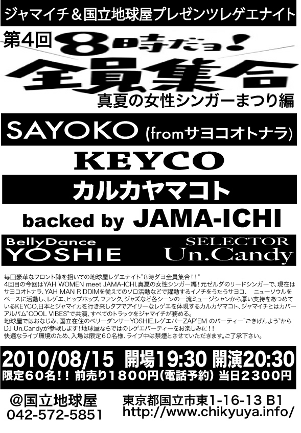
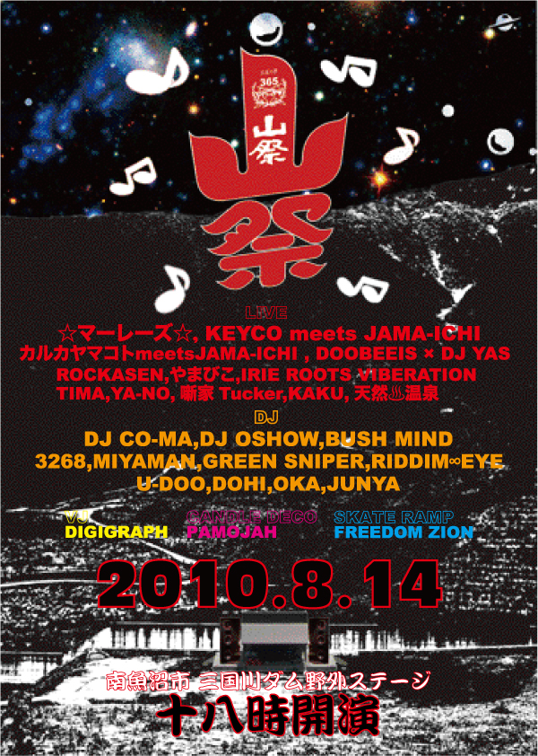
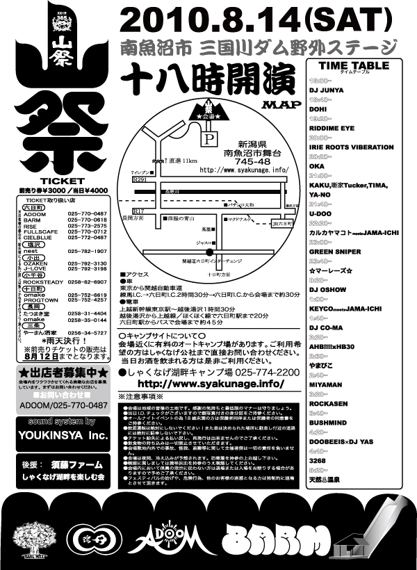
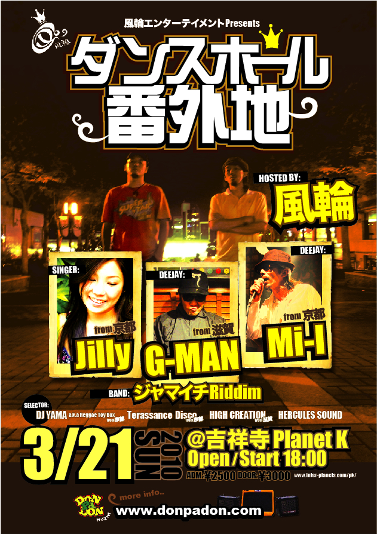
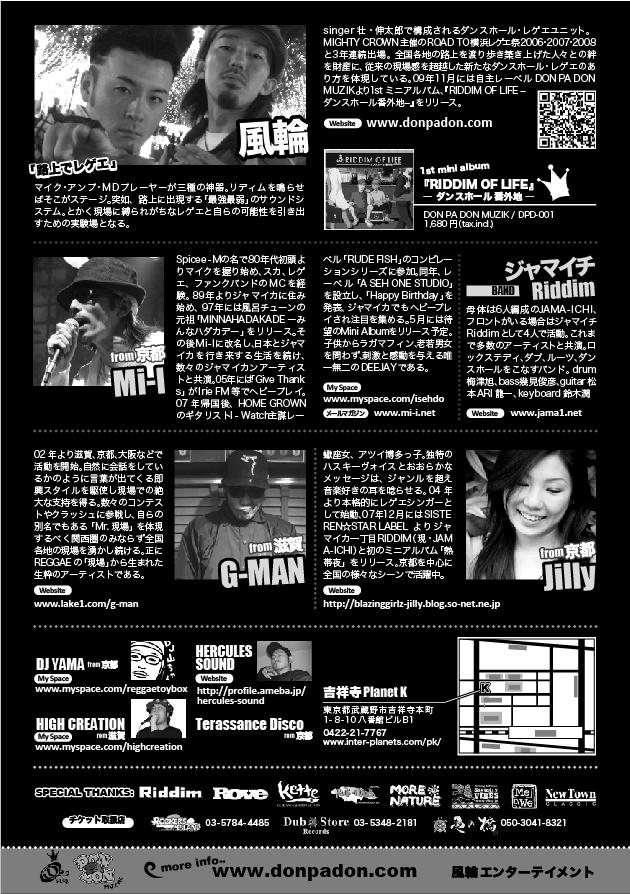
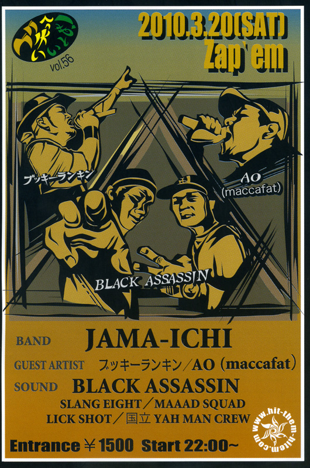

2010年5月8日(土)-9日(日):One Love Jamaica Festival 2010

ジャマイチは8日(土)に出演。
feat. ランキンタクシー、SISTER KAYA 、AO (maccafat / DRY&HEAVY)、ブッキーランキン
- ■日程：2010年5月8日(土)-9日(日)
- ■場所：代々木公園
- One Love Jamaica Festival 2010
live Chee & Treasure Nice
Time Steppers
JAMA-ICHI
Carib Rocks
DJ COM (Barrel)UMESAKO (Ocean Liner)and more...
foodMAYA's Kitchen
@Nobi Beach Club神奈川県横須賀市野比5-4-29 Nobi Yokosuka-shi Kanagawa050-3103-4548
京急線快特・京急久里浜（または御崎口）行きに乗り、「京急久里浜」駅で下車。改札を出て階段を下りるとバス停があります。
右側の2番乗り場で「久３」バス～「国立久里浜病院」（最終の停留所）下車（190円）
徒歩2分、または「久８」バス～ 「外来門入り口」下車（220円）、徒歩2分
車でお越しの場合:第３京浜～横浜横須賀道経由で9番出口・佐原ICを降りる。
カーナビがない場合は、久里浜方面へ下り、東京湾フェリー乗り場を左に見ながら南下。
トンネル抜けてすぐ、斜め右方向へ、坂を上る※。そのまま道なりに進み、「進入禁止」の看板が見えたら右
400mほど先の右手に見える茶色の家が Nobi Beach Club です。※当日工事により進入禁止である場合があります。
その際はそのまま海岸線を三浦方面へ下り、2本目の路地を右折し、坂を上がります。
バス停「国立久里浜病院」のところで右折、道なりに進むと左手に Nobi Beach Clubが見えます。
恩納村を盛り上げたい！恩納村で楽しみたい！ただこの思いから始まった今回の企画。
第一回目は、恩納村に店舗を構える数店舗に協力して頂き、将来の恩納村一大ミュージックイベントへの足掛けとして2011年6月18日(土)にスタート。
当日は、地元協力店舗による屋台、いろんなジャンルのアーティストで楽しい時間を共有できるアットホームでHappyなイベントを目指します。
尚、このイベントで得た収益は、恩納村で活動するボランティア団体、海の清掃活動、次回のイベントへの準備費として使わせて頂きます。
○出演アーティスト
ジャマイチ featuring ＰＡＮＧ
阿佐ヶ谷チープス
安田龍馬
ＳＨＯＺＹ’Ｓ ＢＡＮＤ
Nelo Trips
ｅｔｃ．．．
○オープニングアクト
茶番ＢＯＹＳ
ちんだみITOKA'S

▼GUEST日本頑張ろう！
東日本大震災チャリティー
「ゲリラ阿佐ヶ谷どこでもストリートライブ」
４月２日土曜日 １７時から２０時
※ジャマイチは一番街、オルフェ横の駐車場あたりで演ります
3/25地球屋チャリティーライブ！チャージを義援金として被災地に送ろうと思います！
■ライブ
・ジャマイチ（ゲストKEY:KENLOW form ニガヨモギ) + 風輪
・ヤガラ
■ベリーダンス
・YOSHIE
国立在住ベーシストKUUBO(JungleRoots)率いるSP BANDをバックにPANGが地球屋で歌います!地球屋ではお馴染みアオ&ジャマイチのライブもお見逃しなく!
■ライブ
PANG(VO) & SP BAND[21:30]
B:Kuubo
D:Takayang
K:Mayumi
G:Akihiro
AO(VO/ex.Dry&Heavy) and JAMA-ICHI[20:20]
D:ASAHI UMEZU
B:IKUMI
G:RYUICHI "ARI"
K:KEN☆LOW(frmNIGAYOMOGI)
■セレクター
・H☆F(CULTURAL VIBES)
・WARUTA P-38(国立ヤーマンクルー)
ARTIST: AO&JAMAICHI / 千尋 with ShunShun / JUNN&REI
DJ:りょうた（国立ヤーマンクルー）

ARTIST: SAYOKO from サヨコオトナラ / Keyco / カルカヤマコト backed by JAMA-ICHI


■LIVE
☆マーレーズ☆
カルカヤマコト meetsJAMA-ICHI
KEYCO meetsJAMA-ICHI
ROCKASEN
DOOBEES×DJ YAS
TIMA
やまびこ
噺家TUCKER
KAKU
YA-NO
天然温泉
■DJ
DJ CO-MA
DJ OSHOW
BUSH MIND
3268
GREEN SPIER
RIDDIM EYE
MIYAMAN
U-DOO
DOHI
JUNYA
OKA
ジャマイチは8日(土)に出演。
feat. ランキンタクシー、SISTER KAYA 、AO (maccafat / DRY&HEAVY)、ブッキーランキン

いつのまにか5月4日に移動してた「みどりの日」。Yah-manなバンドばかり集まりました！DJにはHOMERUN SOUNDとChitChat店主の渕上零に加えAOも参加。こちらも豪華！
■LIVE
光風&GREEN MASSIVE
AO(Dry&Heavy/maccafat)&JAMA-ICHI
Karamushi&&Friends
■DJ
HOMERUN SOUND
渕上零(from ChitChat)
AO(Dry&Heavy/maccafat)
■TICKET&INFO
元住吉POWERS2
TEL 044-455-0007
E-MAIL powers_two@ybb.ne.jp
HP http://www.powersbar.com/
ADDRESS 〒211-0021川崎市中原区木月住吉町21-5

ARTIST: PANG / Keyco / JAMA-ICHI



・RANKIN TAXI
・JAMA-ICHI
・CARIB ROCKS
・THUNDER KILLA
・AO INOUE
・KUMOYUKI
・HOGUSI
・KNOCK
MC:ガッシュ
FOOD:GREAT BLISS
音楽好きの、音楽好きによる、音楽好きのためのイベント
東京No.１ヤバ楽しい音楽遊園地
イベント名【★東京の星★】
★外人FREE（アジア系は受付で見抜きます）
★フリーバナナ（入場者皆さんにバナナをプレゼント♪エネルギー補給にどうぞ）
★テキーラガールからのテキーラ購入は３００円!!
●開催場所は、
○渋谷「宇田川LOVERS ROCK CAFE」
○同じビル直ぐ下の階「STUDIO」
○さらに斜め真向かいの新しいスポット「虎子食堂」
その３店舗で、行き来自由!!!スリーフロアーでのロングラインイベントが実現することに。
★「宇田川LOVERS ROCK CAFE」では、レゲエ、ROCK、DUB、HIPHOP、JAM BANDなどオールジャンルのアーティスト達が生バンドスタイルで年末の熱いライブを体感!!! ★「STUDIO」は、アコースティックレゲエをテーマとしたROCKERSステージ。東京の真ん中で本格Inna de yardスタイルのライブがみれる!!
★「虎子食堂」では、PART2STYLEがプロデュースのFUTURE RAGGAラウンジと物販ブースの出店。食事もしっかり出来ます!!!
年末の熱い夜。出入り自由のハシゴスタイル、東京渋谷の真ん中で、いくつも輝く星達を体感しに遊びに来てみて下さい!!!
LIVE
カルカヤマコト with JAMA-ICHI
SUIKA
ほまれ
AFNICA
☆マーレーズ☆
DJ
MaL＆ジャーゲジョージ(RUB-A-DUB MARKET)
NAMA-ROY(THREE ONE LENGTH)
国立YAHMAN CREW
STC
リラクバナナゼーションDJLIVE
タイムスケジュール
09:00～09:40 DJ～STC
09:40～10:10 LIVE～AFNICA
10:10～10:40 DJ～D＜リラクバナナゼーション＞
10:40～11:20 LIVE～ほまれ
11:20～12:00 DJ～国立YAHMAN CREW
12:00～12:40 LIVE～カルカヤマコトwithジャマイチ
12:40～01:40 DJ～MaL＆ジャーゲジョージ
01:40～02:20 LIVE～SUIKA
02:20～03:00 DJ～シークレットDJ
03:00～03:40 LIVE～★マーレーズ★
03:40～05:00 DJ～NAMA-ROY
LIVE
IZABA（from jamaica）
大磯ROCKERS
光風
Ucoca
DJ
DJ１TA-RAW(PART2STYLE)
山頂瞑想茶屋
宙ぶらりんDegi.Cus
STC
MaL＆ジャーゲジョージ(RUB-A-DUB MARKET)
♪タイムスケジュール♪
11:00～11:40 DJ～STC
11:40～12:40 DJ～１TA-RAW
12:40～01:30 LIVE～大磯ROCKERSwithIZABA
01:30～02:20 DJ～宙ぶらりんDegi.Cus
02:20～03:00 LIVE～光風
03:00～03:40 DJ～山頂瞑想茶屋
03:40～04:20 LIVE～Ucoca＆ほまれ
04:20～05:00 DJ～DJ １TA-RAW
05:00～06:00 DJ～MaL＆ジャーゲジョージ
DJ
YAHMAN(CHAMPION BASS/Tribal Connection)
NOOLIO(PART2STYLE)
JAHTOME(ONE MILE SKANK)
Doc.Koyamantado(未来世紀メキシコ)
P-RUFF(MADMADD/Instant Dub)
♪タイムスケジュール♪
11:00～11:30 P-RUFF
11:30～12:00 NOOLIO
12:00～12:30 DR. KOYAMANTADO
12:30～01:00 JAHTOME
01:00～01:30 YAHMAN
01:30～02:15 P-RUFF
02:15～03:00 NOOLIO
03:00～03:45 DR. KOYAMANTADO
03:45～04:30 JAHTOME
04:30～05:15 YAHMAN
シーンを牽引しつづけるジャパニーズレゲエ界のオリジネーター (RANKIN TAXI),DubSensemaniaを率い、ピアニカとスイートヴォイスで ルーツシーンを支える(RAS TAKASHI),すでに5枚のフルアルバムをリリースしている注目女性シンガー(PANG),そして地元国立からは,maccafat,Dry＆Heavyのフロントルーツシンガー(AO)という濃ゆいフロント陣を迎えて濃ゆいレゲエかましちゃいます！チャージは地球屋価格の2000円ポッキリ。 (一組あたり500円で見れちゃう!)限定60名様です。 電話予約受付中!売切れ必至!
・RANKIN'TAXI
・RAS TAKASHI(DUB SENSEMANIA)
・AO (maccafat / DRY&HEAVY)
・PANG
backed by JAMAICHI
・TETSUNDO(TETSUNIQUES)
・NAMETAKE

Channel Links Band / Ja liv Band / JAMA-ICHI RIDDIM
RUEED / EELMAN / AO (maccafat / DRY&HEAVY) / RANKIN TAXI / Keyco / Ailie / 風 / 弁才天 / Cappa Sight / The Love Stations
大和音SOUND

高木ブー , GREEN2 , RaM , ダイナマイトしゃかりきサーカス , 峰 香代子
宴屋本舗 , ハッチハッチェルバンド , matsueri , ,
ドーベルマン , LIDERY , うるふ , JAMA-ICHI

SISTER KAYA , ハイジ ,ジャマイチ with フィーチャリング・アーティスツ(RANKIN TAXI , AO INOUE for Dry&Heavy )

ROOTS MELLOWS
JAMAICHI feat. PANG,MIKI
BIG'H' H☆F SOGA NAMETAKE
9月の『AUTHENTIC』は残暑を吹き飛ばすダブルライブプログラム！
寡黙な活動ながら、そのぶれることの無いルーツ魂にリスペクトを送る心あるレゲエファンも数多いROOTS MELLOWS。今年は浜北ROOTS MUSIC FESTIVALにおいて本領発揮のルーツロックを熱く聴かせた。久々出演の新宿OPENでも大いに盛り上げてくれるはず。
そしてもう一つのライブアクトには先日メジャーデビューを果たしたJAMAICHI。
前身のジャマイカ一丁目バンドから活動を重ね、現在のメンバーに固定、そのタフなリディムに磨きをかけてきた。デビューアルバムでも多彩なシンガーを迎え、軽快なダンスホールからジワリと聴かせるルーツロックまで、生音リディムの楽しさを自在に表現した'ジャマイチ'。今回は注目の女性シンガー、PANGとMIKIをフューチャーしたライブとなる。
PANGはこれまで３枚のアルバムや数々のシングルをドロップし、TVテーマソングや映画「マダガスカル」イメージソングなどにも起用されるなど、ダンスの現場だけに限らずメジャーなフィールドでも活躍しているアーティスト。聴く者の心に響き元気を与えるその歌詞に共鳴する同世代の女性から熱い支持を受けている。ジャマイチとは初の共演。
そしてもう一人のシンガー、MIKIは、代々木公園『ONE LOVE JAMAICA FESTIVAL』における’2009 BOB MARLEY SONGS DAY'でZimbabweを熱唱し、グランプリに輝いた,今後注目のシンガー。
このジャマイチとPANG、MIKIとのコラボレーションは必見！
個性豊かな二つのバンドがLOWを一新し、ますますその美しい爆音に磨きをかけた新宿OPENで見せるパフォーマンスに注目してほしい。
《ROOTS MELLOWS》
Dr&Vo・YOU、Bass・JOE、G・TAKA、Key・KENRO、Percus・YASからなる5ピースのルーツロックバンド。今年は浜北ルーツレゲエフェスをガツンと盛り上げてきました。朝までジャミング!
《PANG》
神戸出身。幼い頃からピアノを習い、19歳で本格的にヴォーカリストを志し、ヴォイス・トレーニングを始める。2000年から都内のクラブ（池袋BED、渋谷VUENOS、六本木NUTSなど）でライブ活動を開始
2002年に同じクラブ・イベントに出演していた、日本を代表するレゲエ・シンガーNAHKIの目にとまり数曲をレコーディング。この時に収録されたデモ・トラックが音楽業界関係者の間で話題を呼ぶことになる。
その年の夏、ZIP FM主催のイベント「レゲエ・フェスタ」にPUSHIM、Fire Ballらと共に出演。そのオリジナリティ溢れる独特な歌詞の世界と、魂を震わす歌声はオーディエンスを感動の渦に巻き込んだ
2003年にインディーズ盤ミニ・アルバム『ペゾラ〜すてきな夜空〜』をリリース。そして同年ミニ・アルバム『晴れ』でメジャーデビュー。
2004年3月に3rdミニ・アルバム『ゆらり』、同年6月に4thミニアルバム『あはっ！』、2005年2月に5thミニアルバム「stage by stage」とミニアルバムを立て続けにリリースしその実力を業界に知らしめた。その後2005年4月の沖縄限定シングル「トロピカルアイランドc/wSMILE」で沖縄の音楽シーンを騒がせた、そして同年6月には待望の1stフルアルバム「PANG」をリリース。8月にはドリームワークス制作のアニメーション映画「マダガスカル」イメージソングに日本で初めて起用されるなど活動の幅も広がりをみせてきている。ジャパレゲ・シーンがますますの盛り上がりを見せるなか、今後もっとも飛躍が期待される女性レゲエ・アーティスト。
HP:http://www.pang.jp/index.html

BAGDAD CAFＥ THE trench town/GOMA & JUNGLE RHYTHM SECTION/東田トモヒロ/Likkle Mai/JAMA-ICHI/ランキンタクシー/AO［maccafat/DRY&HEAVY］/カルカヤマコト/PAPA U-Gee and more......
BE THE VOICE/BLACK BOTTOM BRASS BAND/EGO-WRAPPIN' AND THE GOSSIP OF JAXX Leyona/Spinna B-ILL and more......
KEYCO backed by ジャマイチ
マーレーズ
TOKYOUFUU
HIDENKA GOUKI
・TEX & the Sun Flower Seed
・ジャマイチ
・fussy&redeems
・ニガヨモギ
・REGGAELATION INDEPENDANCE
詳細未定

来月２０日土曜は笑っていいとも！４周年！！！ なんと４８回目の笑っていいとも！です！ スペシャルゲストにmaccafat！GUAN CHAI！BLACK ASSASSIN！ リディムバンドにJAMA-ICHIが登場です！！！ さらに大阪からUJ！BUKKY RANKINがお祝いにかけつけてくれます！ その他たくさんのアーティストがかけつけてくれるということでいつもより一時間早く夜９時からスタートします！ そんでZAP'EMから４周年！いうことでなんと９時から11時までは生ビール２００円です！！！ 早めの入場がお得です！！！ 笑っていいとも！４周年！是非是非笑いにきてちょうだいな！
ファーストアルバムをドロップしたジャマイチが高円寺でライブします！代々木公園ボブマーレイコンテストで優勝しJazzyJamDancehallにも参加したシンガーミキを迎えて登場します。二番目の予定です。